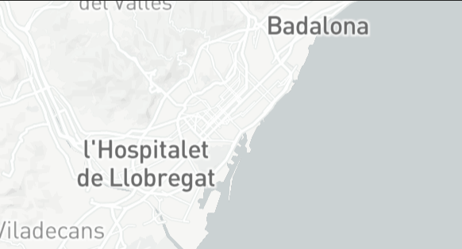

Barcelona is an almost ideal European city — near-perfect weather, beaches within city limits, iconic parks and Gaudí’s architecture. The new reality for 2026: Europe’s strictest overtourism rules, including high tourist taxes and a plan to phase out all tourist-apartment licenses by 2028 — so book early and visit outside the July–August crush.